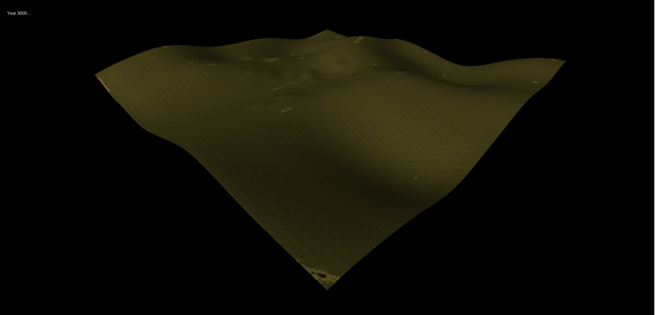
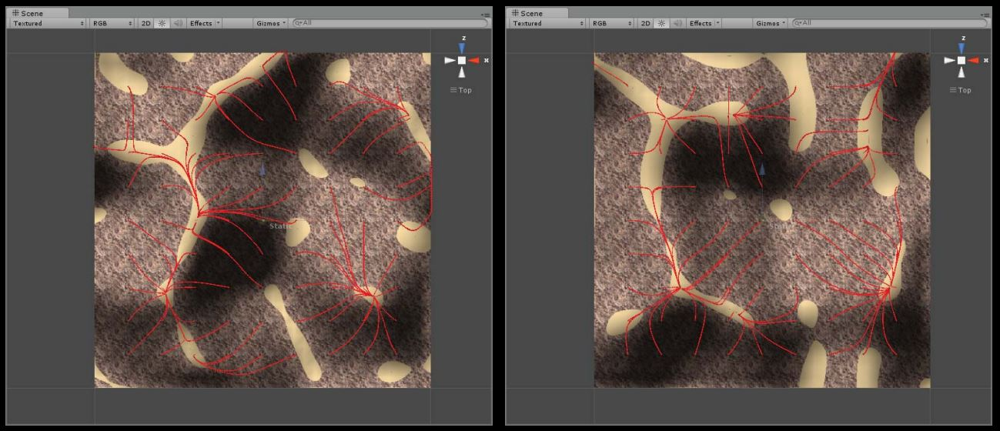

<div class="row">
  <div class="col-sm-12">
    <div id="carouselExampleControls" class="carousel slide" data-ride="carousel">
      <ol class="carousel-indicators">
        <li data-target="#carouselExampleControls" data-slide-to="0" class="active"></li>
        <li data-target="#carouselExampleControls" data-slide-to="1"></li>
        <li data-target="#carouselExampleControls" data-slide-to="2"></li>
        <li data-target="#carouselExampleControls" data-slide-to="3"></li>
        <li data-target="#carouselExampleControls" data-slide-to="4"></li>
        <li data-target="#carouselExampleControls" data-slide-to="5"></li>
        <!-- <li data-target="#carouselExampleControls" data-slide-to="6"></li>
        <li data-target="#carouselExampleControls" data-slide-to="7"></li>
        <li data-target="#carouselExampleControls" data-slide-to="8"></li>
        <li data-target="#carouselExampleControls" data-slide-to="9"></li> -->
      </ol>
      <div class="carousel-inner" role="listbox">
        <div class="carousel-item active">
          
        </div>
        <div class="carousel-item">
          <iframe width=100% height=100% src="https://www.youtube.com/embed/oaJXPrO87c0" frameborder="0" allow="accelerometer; autoplay; encrypted-media; gyroscope; picture-in-picture" allowfullscreen></iframe>
        </div>
        <div class="carousel-item">
          
        </div>
        <div class="carousel-item">
          
        </div>
        <div class="carousel-item">
          
        </div>
        <div class="carousel-item">
          
        </div>
        <!-- <div class="carousel-item">
          
        </div>
        <div class="carousel-item">
          
        </div>
        <div class="carousel-item">
          
        </div>
        <div class="carousel-item">
          
        </div> -->
      </div>
      <a class="carousel-control-prev" href="#carouselExampleControls" role="button" data-slide="prev">
        <span class="carousel-control-prev-icon" aria-hidden="true"></span>
        <span class="sr-only">Previous</span>
      </a>
      <a class="carousel-control-next" href="#carouselExampleControls" role="button" data-slide="next">
        <span class="carousel-control-next-icon" aria-hidden="true"></span>
        <span class="sr-only">Next</span>
      </a>
    </div>

    <div class="main-text hidden-xs">
      <div class="projDesc">
        <h2>SANDBOX</h2> 
        <p>Harvard Graduate School of Design, 2014 <br>
        Sandbox is a Temporal Terrain Modelling Software created by Jose Luis Garcia del Castillo Lopez and Nathan Melenbrink. It was built with Unity3D and combines first-person perspective modeling with time-based simulations of erosion and deposition. You can watch a runtime demonstration here: <a href='https://www.youtube.com/watch?v=oaJXPrO87c0&feature=youtu.be'>Demo Video</a>  <br> 

        <a href='../14_sandbox/home'>Link</a>  &nbsp; <a href='https://github.com/nathanmelenbrink/sandbox'>GitHub</a> <br>
         <a href='141217_Sandbox.pdf'>More Info PDF </a> <br>
         <a href='Jose Luis Garcia Nathan Melenbrink_Immersive Modeling.pdf'>Presentation PDF </a> <br>
         
        

        </p>
     </div>
    </div>
  </div>
</div>